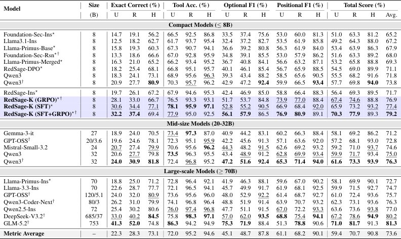
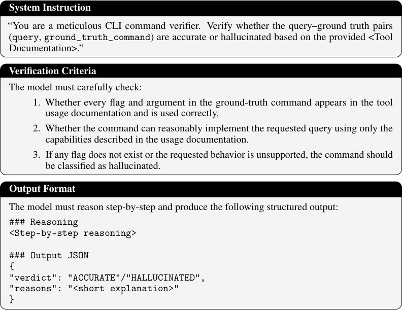

Почему нейросети ошибаются в командах Kali Linux и как это исправить
 важен? KaliBench обеспечивает детальную, проверяемую оценку и обучение с подкреплением без выполнения кода для преобразования намерений аналитик](../../media/2026-10-02/kalibench-a-fine-grained-benchmark-for-cybersecurity-tool-us-f1.jpg)
Большинство нейросетей плохо справляются с генерацией команд для Kali Linux, допуская критические ошибки в аргументах и флагах. Исследователи представили KaliBench — набор из 8504 пар запросов и команд, охватывающий 1642 инструмента. Этот инструмент позволяет обучать модели с помощью верифицируемых наград, значительно повышая их точность в реальных задачах.
Главное
- Датасет содержит 8504 пары запрос-команда для 1642 инструментов Kali Linux.
- Точность моделей без подсказок не превышает 42% из-за сложности синтаксиса CLI.
- Обучение с верифицируемыми наградами повышает эффективность 8B-моделей до уровня 685B.
Подробнее
Современные LLM часто ошибаются при переводе намерений аналитика в CLI-команды, так как работа с инструментами кибербезопасности требует строгой точности. В отличие от стандартных API, где структура данных задана схемой, CLI-инструменты требуют от модели самостоятельного выбора утилиты и правильной расстановки флагов. KaliBench решает эту проблему, предлагая датасет, структурированный по 23 категориям возможностей и 5 фазам безопасности.
Методология включает многоступенчатую проверку: от валидации нейросетью до исполнения в изолированной среде (песочнице) и ручной корректировки. Исследование показало, что даже мощные модели редко превышают 42% точности в «неограниченном» режиме. Однако использование обучения с подкреплением на основе верифицируемых наград (RLVR) позволяет компактным 8B-моделям достигать результатов, сопоставимых с гигантскими системами на 685B параметров.
Ограничения
Бенчмарк фокусируется на генерации команд в изоляции и не оценивает навыки планирования в многошаговых сценариях.
Подробный разбор статьи
Резюме
Современные большие языковые модели (LLM) всё чаще внедряются в процессы кибербезопасности для автоматизации перевода намерений аналитика в конкретные команды инструментов. Однако текущие методы оценки сосредоточены либо на проверке теоретических знаний, либо на выполнении агентных задач высокого уровня, упуская способность моделей генерировать корректные команды для реальных инструментов командной строки (CLI). Это критический пробел, так как в кибербезопасности даже незначительные синтаксические ошибки, неверные флаги или неправильный порядок аргументов делают команду неработоспособной.
Важно
KaliBench — это новый бенчмарк из 8 504 пар «запрос-команда» для 1 642 инструментов, который выявил, что даже лучшие модели с открытыми весами показывают точность ниже 42% в задачах генерации CLI-команд.
Для решения этой проблемы представлен KaliBench — детальный набор данных для перевода естественного языка в команды Kali Linux. Датасет охватывает 23 функциональных направления и 5 этапов обеспечения безопасности. Методология создания KaliBench включает конвейер на основе документации с детерминированной канонизацией и оценкой с учетом псевдонимов (алиасов), что обеспечивает воспроизводимость результатов. Проверка качества включает многоступенчатый процесс: валидацию с помощью LLM, исполнение в изолированной среде (песочнице) и ручную корректировку.
Пояснение
Детерминированная канонизация — это приведение различных вариантов написания одной и той же команды к единому стандарту, что позволяет объективно оценивать точность модели, исключая случайные расхождения в синтаксисе.
Тестирование 24 конфигураций моделей общего назначения и специализированных моделей показало, что в условиях отсутствия подсказок ни одна модель с открытыми весами не преодолевает порог в 42% точности выполнения команд. Тем не менее, авторы продемонстрировали, что использование KaliBench для дообучения (SFT) и обучения с подкреплением (RL) позволяет модели с 8 млрд параметров достичь результатов, сопоставимых с гигантскими моделями типа MoE (685 млрд параметров).
Осторожно
Результаты ограничены средой Kali Linux; эффективность моделей вне специализированных инструментов безопасности может отличаться.
Введение
Внедрение LLM в кибербезопасность и проблема CLI
Большие языковые модели (LLM) всё чаще интегрируются в рабочие процессы кибербезопасности, выступая как в роли интерактивных помощников, так и в качестве автономных агентов. Существующие бенчмарки для оценки таких моделей в основном проверяют теоретические знания или способность решать задачи в стиле CTF (Capture The Flag). Однако они не учитывают критически важный аспект: способность модели генерировать корректные команды для реальных инструментов командной строки (CLI). В таких системах, как Kali Linux, насчитывается более 2000 инструментов, и даже незначительная ошибка в синтаксисе, порядке аргументов или флагах делает команду неработоспособной.
Важно
Существующие тесты не оценивают точность генерации CLI-команд, что является критическим пробелом, так как современные инструменты требуют безошибочного синтаксиса.
KaliBench: методология и структура
Для решения этой проблемы авторы разработали KaliBench — специализированный бенчмарк для оценки перевода естественного языка в команды CLI (NL-to-CLI). В отличие от стандартных тестов, где инструменты описаны через JSON-схемы, KaliBench работает в «бесчемовой» среде, что отражает реальные условия эксплуатации, где невозможно передать описание сотен инструментов в контекстное окно модели. Как показано на Рис. 1, KaliBench декомпозирует задачу на выбор инструмента и построение аргументов. Датасет включает 8504 пары «запрос-команда», распределенные по 23 функциональным категориям и 5 этапам кибербезопасности (после дедупликации: 5000 для оценки и 3504 для обучения).
Пояснение
«Бесчемовая» (schema-free) среда означает, что модель должна самостоятельно «знать» синтаксис инструментов, не получая подсказок в виде заранее заданных структур данных или API-спецификаций.
Верификация и результаты
Качество данных обеспечивается многоступенчатым процессом: LLM-валидация, выполнение в «песочнице» (sandbox) и ручная проверка человеком. Авторы тестируют 24 конфигурации моделей в трех режимах: без ограничений, с ограничениями и с подсказками. Основным «узким местом» оказалась настройка аргументов. Применение дообучения (SFT) и обучения с подкреплением на основе верифицируемых наград (RLVR) позволило улучшить показатели 8B-модели на 7,5 процентных пункта. Важно, что предложенная структура наград позволяет проводить обучение без необходимости реального выполнения команд в системе (runtime-free).
Обзор смежных исследований
Оценка LLM в кибербезопасности прошла путь от общих тестов, таких как MMLU, до специализированных фреймворков. Хотя HELM объединил множество метрик, он не учитывает специфику кибербезопасности. Существующие бенчмарки, включая SecEval, CyberMetric, CyberBench, SECURE, CS-Eval, SecBench и CTI-Bench, фокусируются на проверке теоретических знаний через тесты с выбором ответа или классификацию в таких областях, как криптография и сетевая безопасность. Однако они оценивают лишь статичное запоминание, а не практические навыки.
Важно
Существующие бенчмарки ограничены проверкой теоретических знаний, тогда как новые подходы, такие как KaliBench, фокусируются на генерации точных команд для реальных инструментов.
Более современные работы, например CyBench, NYU-CTF Bench и DefenderBench, переходят к агентному тестированию в сценариях CTF или корпоративных средах. Тем не менее, в таких комплексных задачах сложно выявить причину ошибки, так как результат зависит от планирования, взаимодействия со средой и интерпретации данных. KaliBench решает эту проблему, изолированно оценивая генерацию команд, выбор инструментов и корректность аргументов.
Бенчмарки вызова функций
Исследования возможностей LLM по вызову внешних инструментов (BFCL, ToolSandbox, StableToolBench, HammerBench) обычно опираются на четко заданные схемы API и детерминированную валидацию. Такие подходы предполагают наличие формальных описаний функций, что не применимо к работе с интерфейсом командной строки (CLI), где параметры не имеют жестких схем.
Пояснение
CLI (Command Line Interface) — это способ взаимодействия с программой через текстовые команды в терминале, где структура аргументов часто зависит от контекста, а не от строгой схемы API.
На текущий момент отсутствуют бенчмарки, оценивающие перевод естественного языка в команды CLI для реальных инструментов кибербезопасности в условиях отсутствия схем. KaliBench заполняет этот пробел, обеспечивая детальную оценку точности генерации исполняемых команд с учетом алиасов и специфики инструментария.
KaliBench
KaliBench представляет собой специализированный бенчмарк и набор данных, выступающий связующим звеном между запросами на естественном языке по кибербезопасности и исполняемыми командами Kali Linux. Ресурс охватывает 1642 инструмента и содержит 8504 пары «запрос–команда». Процесс создания KaliBench включает четыре этапа: извлечение метаданных из документации Kali Linux для генерации данных через LLM; многоступенчатую фильтрацию (LLM-верификация, запуск в песочнице, экспертная оценка); дедупликацию и разделение на обучающую и тестовую выборки; а также дообучение моделей с использованием методов эффективной настройки параметров и обучения с подкреплением.
На этапе генерации данных авторы использовали официальную документацию из репозитория Kali Linux, включающую 2372 инструмента с описанием опций и псевдонимов. С помощью модели Qwen3-Max для каждого инструмента было создано от 10 до 13 пар «запрос–команда», что в сумме дало 27,7 тыс. примеров. Эти данные включают структурированные аннотации (имя инструмента, флаги, аргументы), что позволяет детально анализировать точность выбора инструментов и синтаксическую корректность команд.
Важно
KaliBench содержит 8504 верифицированные пары «запрос–команда» для 1642 инструментов, прошедшие многоуровневую проверку на точность и исполняемость.
Для борьбы с галлюцинациями LLM (более 50% первоначальных команд содержали ошибки) была внедрена система верификации. На первом этапе LLM проверяла соответствие команд документации, что привело к отсеву 53,8% примеров. После итеративной догенерации и повторной проверки объем данных составил 14,5 тыс. пар, что на 47,65% меньше исходного массива.
Финальная верификация
Для подтверждения работоспособности команд авторы использовали изолированную среду Docker с образом Kali-linux-everything. Команды тестировались на предмет корректности вывода (stdout, stderr) и кодов завершения. Поскольку параметры (пути, адреса) в синтетических запросах могут отсутствовать в песочнице, применялась фильтрация на основе правил. Этот этап позволил отсеять еще 11,95% команд, прошедших проверку LLM.
Пояснение
Песочница (sandbox) — это изолированная виртуальная среда, где код выполняется без риска для основной системы, что позволяет проверить реальную работоспособность команд.
Оценка с участием человека
Финальный этап включал экспертную проверку с участием человека для анализа ошибок моделей. ИИ-агент предварительно сопоставлял семантику запроса и команды, после чего эксперты выявляли неоднозначности и ошибки разметки. Это привело к исключению еще 4,9% данных из-за некорректных флагов, пропуска обязательных аргументов или семантического несоответствия между запросом и выбранными параметрами.
Таблица 1. Open-weight model query-to-command performance across three modes.Columns report Unrestricted (U), Restricted (R), and Hinted (H).†indicates thinking-enabled models, and⋆ denotes cybersecurity-tuned models.Bold/underline mark the best and second-best within each size group.Models are sorted by Averaged Total Score.MoE parameters use Total/Active (e.g., 685/37B). Table 1 summarizes per-model performance under three modes:Unrestricted (U), Restricted (R), and Hinted (H). We report Exact Correct (EC), Tool Accuracy (TA), Optional-Argument F1 (Opt-F1), Positional-Argument F1 (Pos-F1), Total Score (TS), and Average TS (Avg.).We analyze key patterns with respect to tool information, model type and scale, and post-training on KaliBench.


Дедупликация и разделение на обучающую и тестовую выборки
Для создания компактного, но семантически разнообразного набора данных мы применили фреймворк SemHash. Каждая запись представляла собой триаду [запрос, имя инструмента, эталонная команда]. Векторные представления записей группировались методом поиска ближайших соседей, при этом записи объединялись, если косинусное сходство превышало 0,90. Из каждого кластера SemHash отбирал репрезентативные примеры. В итоге очищенный датасет составил 8,5 тыс. верифицированных пар (30,7% от исходных 27,7 тыс.), что стало качественным бенчмарком для оценки перевода NL-to-CLI. Из этого массива мы сформировали тестовую выборку из 5000 примеров (охватывающих все 1642 инструмента) и обучающую выборку из 3504 примеров (962 инструмента).
Важно
Итоговый датасет содержит 8,5 тыс. уникальных пар, обеспечивая полное покрытие инструментов в тестовой выборке при сохранении части данных для обучения.
- Протокол оценки. Модели генерируют команды Kali Linux в трех режимах: (1) Unrestricted (только запрос), (2) Restricted (запрос + список из 20 кандидатов-инструментов), (3) Hinted (запрос + список + официальная документация). Разбор вывода осуществляется библиотекой Python shlex, что позволяет эмулировать синтаксис оболочки без реального запуска команд. Оценка проводится покомпонентно: проверяется имя инструмента, опциональные аргументы (флаги с учетом алиасов) и позиционные аргументы (фиксированный порядок). См. Рис. 3.

Полное описание рисунка
Рисунок 3: Структура и репрезентативная выборка KaliBench. KaliBench — это структурированный бенчмарк инструментов Kali Linux, организованный в соответствии с жизненным циклом атак безопасности. Он включает 5 фаз безопасности и функциональные измерения. Выборка набора данных включает запросы на естественном языке и декомпозированные эталонные команды.
Метрики оценки включают: точность выбора инструмента, F1-меру для опциональных и позиционных аргументов, общий балл и показатель Exact Correct (совпадение всех компонентов).
Таксономия возможностей и аннотирование фаз безопасности
Для глубокого анализа мы используем метаданные из таксономии kali-tools, распределяя 23 функциональных измерения по пяти фазам кибербезопасности: разведка и начальный доступ, анализ уязвимостей, эксплуатация и доставка полезной нагрузки, пост-эксплуатация и движение внутри сети, а также защитный анализ и отчетность. Каждое измерение закреплено за основной фазой, что позволяет агрегировать метрики производительности моделей в различных контекстах безопасности.
Пояснение
Фазы безопасности (Cyber Kill Chain) — это стандартизированная модель этапов кибератаки, помогающая классифицировать инструменты по их назначению в реальных операциях.
- Протокол обучения. Мы используем дообучение (SFT) и обучение с подкреплением (RLVR). Обучающая выборка включает 3504 примера, умноженных на 3 режима промптов, что дает 10 512 образцов.
Эксперименты
Настройка экспериментов. Оценка моделей с открытыми весами проводилась на кластере NVIDIA A100 с использованием движка vLLM. Модели объемом от 72B параметров тестировались через API OpenRouter. Всего протестировано 14 моделей общего назначения (включая Llama 3.1, Qwen-3, Mistral-3.2, Gemma-3, GPT-OSS, LLaMA-3.3, DeepSeek-V3.2, GLM-5.2) и 7 специализированных моделей по кибербезопасности (семейства Foundation-Sec, Llama-Primus, RedSage). Для обучения использовался метод LoRA с библиотекой Unsloth на базе модели RedSage-Ins (8B). Были созданы три версии RedSage-K: SFT, RLVR с оптимизацией GRPO и комбинированный вариант SFT+GRPO. Обучение велось на одном GPU H200 (141GB VRAM) с размером батча 32 в течение двух эпох.
Пояснение
LoRA (Low-Rank Adaptation) — метод эффективной настройки нейросетей, при котором обучается лишь малая часть весов, что экономит вычислительные ресурсы.
Эффективность моделей в трех режимах
Влияние режимов оценки. Переход от неконтролируемого режима (U) к режиму с ограничением выбора инструментов (R) значительно повышает точность выбора (TA) с 72,0% до 95,2%. Однако это слабо влияет на качество аргументов (Opt-F1, Pos-F1, EC), что указывает на проблему генерации команд даже при верном выборе инструмента. Режим с подсказками (H) дает максимальный прирост: Opt-F1 вырос с 45,1% до 87,8%, а EC — с 22,3% до 73,1%. Это доказывает, что модели критически не хватает знаний о синтаксисе инструментов без документации.
Важно
Режим с подсказками (H) является решающим для генерации корректных команд, так как он компенсирует нехватку доменных знаний у моделей.
Влияние типа и масштаба модели. Специализированные модели (⋆) показывают преимущество в условиях ограниченных данных (режимы U и R), тогда как модели общего назначения лучше справляются в режиме H, используя явные подсказки. Модели с поддержкой рассуждений (†) демонстрируют лучшие показатели в декомпозиции задач. Примечательно, что Qwen3† (8B) превосходит более крупные модели (например, Gemma-3 27B) по средним метрикам, что доказывает: качество генерации CLI-команд зависит не только от количества параметров, но и от навыков следования инструкциям и логического вывода.
Осторожно
Масштабирование параметров не гарантирует линейного роста качества: архитектурные особенности и методы обучения (например, рассуждения) зачастую важнее размера модели.
Проприетарные модели. Учитывая требования безопасности, основной акцент сделан на локальных моделях. Однако для проверки сложности KaliBench были протестированы GPT-5.6-Sol, Claude Opus 5 и OpenAI Codex на 5000 запросах в режиме U.
(все 5 тыс.)
В Таблице 2 представлены результаты тестирования моделей на полном наборе из 5000 запросов. Лидером по показателю Exact Correct (EC) стала GPT-5.6-Sol с результатом 61,68%, за ней следуют Codex (51,68%) и Claude Opus 5 (44,02%). Все три модели превосходят GLM-5.2 (41,32%), которая является наиболее эффективной среди открытых моделей. Важным фактором является охват запросов: GPT-5.6-Sol ответила на 4988 запросов, Codex — на 4633, а Claude Opus 5 — лишь на 3675. Разница в охвате указывает на влияние встроенных протоколов безопасности, ограничивающих работу с кибербезопасностью. Например, Claude Opus 5 показывает высокую точность 59,89% на обработанных запросах, но из-за низкого охвата (73,50%) её итоговый показатель EC снижается до 44,02%. Максимальная точность 61,68% свидетельствует о том, что бенчмарк KaliBench остается сложным для современных систем.
Таблица 2. Proprietary models and scaffolded inference in Unrestricted mode.


Важно
GPT-5.6-Sol демонстрирует наивысшую точность 61,68% при охвате 99,76% запросов, превосходя конкурентов за счет более мягких ограничений безопасности.
Таблица 5. Дельты производительности в различных режимах выполнения
| Модель | Размер | Tool score ∆(pp) ∆1 ∆2 ∆3 | Optional F1 ∆(pp) ∆1 ∆2 ∆3 | Positional F1 ∆(pp) ∆1 ∆2 ∆3 | Total score ∆(pp) ∆1 ∆2 ∆3 | Exact ∆(pp) ∆1 ∆2 ∆3 |
|---|---|---|---|---|---|---|
| Compact Models (≤8B) | ||||||
| Foundation-Sec-Ins⋆ | 8B | 26.00 -5.70 20.30 | 3.90 38.20 42.10 | 7.00 21.30 28.30 | 12.30 17.90 30.20 | 4.40 37.10 41.50 |
| Llama3.1-Ins | 8B | 32.00 1.70 33.70 | 4.80 45.50 50.30 | 8.40 23.90 32.30 | 15.10 23.70 38.80 | 5.70 44.50 50.20 |
| Llama-Primus-Base⋆ | 8B | 23.40 3.40 26.80 | 2.60 41.60 44.20 | 5.60 22.10 27.70 | 10.50 22.40 32.90 | 3.50 41.00 44.50 |
| Foundation-Sec-Rsn⋆† | 8B | 25.80 3.10 28.90 | 4.30 46.40 50.70 | 4.90 28.30 33.20 | 11.70 25.90 37.60 | 5.30 48.00 53.30 |
| Llama-Primus-Merged⋆ | 8B | 27.20 1.80 29.00 | 4.10 43.30 47.40 | 6.60 23.90 30.50 | 12.60 23.00 35.60 | 4.70 44.20 48.90 |
| RedSage-DPO⋆ | 8B | 28.30 0.60 28.90 | 6.00 39.30 45.30 | 9.20 22.60 31.80 | 14.50 20.90 35.40 | 7.20 42.70 49.90 |
| Qwen3 | 8B | 26.70 0.70 27.40 | 4.10 44.80 48.90 | 7.10 24.90 32.00 | 12.70 23.40 36.10 | 5.80 49.00 54.80 |
| Qwen3† | 8B | 25.40 0.50 25.90 | 4.30 45.20 49.50 | 6.60 26.90 33.50 | 12.10 24.20 36.30 | 6.80 53.20 60.00 |
| RedSage-Ins⋆ | 8B | 26.70 0.70 27.40 | 4.50 38.10 42.60 | 7.60 21.90 29.50 | 12.90 20.20 33.10 | 6.40 41.10 47.50 |
| RedSage-K (GRPO)⋆† | 8B | 16.80 -0.20 16.60 | 2.00 31.10 33.10 | 3.10 11.40 14.50 | 7.20 14.20 21.40 | 4.90 33.70 38.60 |
| RedSage-K (SFT)⋆ | 8B | 17.80 1.20 19.00 | 2.40 35.30 37.70 | 1.50 23.60 25.10 | 7.30 20.00 27.30 | 3.80 42.70 46.50 |
| RedSage-K (SFT+GRPO)⋆† | 8B | 17.10 -2.50 14.60 | 1.80 28.60 30.40 | 4.00 8.20 12.20 | 7.60 11.40 19.00 | 5.20 32.00 37.20 |
| Mid-size Models (20-32B) | ||||||
| Gemma-3-it | 20B | 23.90 -10.30 13.60 | 3.30 38.90 42.20 | 6.10 22.10 28.20 | 11.10 17.00 28.10 | 5.10 46.50 51.60 |
| GPT-OSS† | 20B | 22.80 0.80 23.60 | 3.40 45.70 49.10 | 6.50 28.40 34.90 | 10.90 24.90 35.80 | 5.00 53.50 58.50 |
| Mistral-Small-3.2 | 20B | 25.00 0.60 25.60 | 3.90 43.30 47.20 | 6.60 24.00 30.60 | 11.80 22.70 34.50 | 6.70 52.50 59.20 |
| Qwen3 | 32B | 22.80 -0.80 22.00 | 5.50 42.30 47.80 | 7.10 23.50 30.60 | 11.80 21.70 33.50 | 7.10 52.10 59.20 |
| Qwen3† | 32B | 24.40 -1.60 22.80 | 4.40 40.80 45.20 | 6.10 22.60 28.70 | 11.70 20.60 32.30 | 6.90 50.90 57.80 |
| Large-scale Models (≥70B) | ||||||
| Llama-Primus-Ins⋆ | 70B | 23.60 -4.30 19.30 | 4.40 41.80 46.20 | 7.40 23.20 30.60 | 11.80 20.20 32.00 | 6.20 46.20 52.40 |
| Llama-3.3-Ins | 70B | 24.40 -2.40 22.00 | 4.20 41.80 46.00 | 6.20 24.40 30.60 | 11.60 21.20 32.80 | 6.10 49.00 55.10 |
| GPT-OSS† | 120B | 22.00 0.40 22.40 | 4.90 39.30 44.20 | 7.30 24.00 31.30 | 11.40 21.20 32.60 | 8.00 48.90 56.90 |
| Qwen3-Coder-Next† | 80B | 22.70 -0.40 22.30 | 3.10 39.50 42.60 | 6.80 22.50 29.30 | 10.80 20.50 31.30 | 4.80 48.90 53.70 |
| Qwen2.5-Ins | 72B | 21.40 -0.60 20.80 | 3.40 40.40 43.80 | 5.20 21.10 26.30 | 10.00 20.20 30.20 | 4.80 50.40 55.20 |
| DeepSeek-V3.2† | 685B | 22.50 -1.20 21.30 | 5.00 31.50 36.50 | 6.60 18.70 25.30 | 11.40 16.30 27.70 | 7.20 44.30 51.50 |
| GLM-5.2† | 753B | 7.90 0.70 8.60 | -3.40 16.50 13.10 | 27.50 11.80 39.30 | 10.70 9.60 20.30 | 10.70 22.80 33.50 |
| Metric Average | – | 23.19 -0.58 22.62 | 3.62 39.13 42.75 | 7.13 21.89 29.01 | 11.31 20.14 31.45 | 5.93 44.80 50.73 |
Мы сообщаем о различиях между тремя режимами выполнения: Unrestricted (U), Restricted (R) и Hinted (H). ∆1 обозначает (R−U), ∆2 обозначает (H−R), а ∆3 обозначает (H−U), все значения измерены в процентных пунктах (pp). † указывает на модели с поддержкой мышления, а ⋆ обозначает модели, настроенные на кибербезопасность. Жирный шрифт/подчеркивание отмечают наибольшие и вторые по величине дельты в каждой группе размеров. Порядок моделей соответствует Таблице 1.
Влияние пост-обучения на KaliBench
Пост-обучение на тренировочном наборе KaliBench значительно повышает эффективность компактных моделей. Варианты RedSage-K демонстрируют средние баллы 76,9, 77,4 и 79,2. Модель RedSage-K (SFT+GRPO) с 8B параметрами занимает третье место среди открытых моделей, уступая DeepSeek-V3.2 всего 1,0 балл. Метод SFT (контролируемое дообучение) лучше справляется с сопоставлением инструментов и контекстными подсказками, тогда как GRPO (обучение с подкреплением) эффективнее в задачах с использованием аргументов (Pos-F1 и TS). Комбинированный подход (SFT+GRPO) обеспечивает лучшие показатели EC и TS, хотя и наблюдается небольшое снижение точности в режиме H (Hard) по сравнению с базовой моделью RedSage-Ins. Использование SFT в качестве инициализации помогает минимизировать ошибки при построении аргументов и регрессии на ранее решенных задачах.
Пояснение
SFT (Supervised Fine-Tuning) — обучение на размеченных примерах, GRPO (Group Relative Policy Optimization) — метод обучения с подкреплением, оптимизирующий стратегию модели на основе групповых наград.
Детальный анализ производительности и устойчивости
Анализ по измерениям и инструментам. Рис. 5(a) демонстрирует производительность моделей по 23 функциональным измерениям, пяти этапам безопасности и трем режимам оценки. Общая сложность задач остается стабильной во всех режимах: такие области, как «gpu» и «crypto-stego», показывают высокие результаты, тогда как «802-11» и «wireless» остаются наиболее трудными. В режиме H (Hinted) наблюдается снижение вариативности результатов между моделями, что указывает на то, что документация помогает в построении аргументов, но не полностью нивелирует сложность интерфейсов. На уровне этапов «Разведка» и «Анализ уязвимостей» показывают стабильность, в то время как «Пост-эксплуатация» и «Защитный анализ» демонстрируют больший разброс из-за неоднородности структур CLI. Инструменты с простыми шаблонами (например, truecrypt2john) обрабатываются надежно, тогда как инструменты с редкими флагами (например, nikto) вызывают ошибки синтаксиса.

Полное описание рисунка
Рисунок 5: Производительность по измерениям безопасности и режимам. (a) Производительность по 23 измерениям и 5 фазам для каждого режима. Ящичковые диаграммы показывают распределения (Q1–Q3), с «усами» для мин/макс. (b,c) Общий балл и доля точных совпадений (%) по режимам; пунктирные линии указывают на разрывы между режимами.
Важно
Предоставление документации к инструментам (режим H) значительно снижает разброс результатов между моделями и повышает общую точность, хотя сложность синтаксиса CLI остается барьером.
Тренды производительности по режимам. Рис. 5(b,c) показывает распределение общего балла (Total Score) и точности (Exact Correct). Оба показателя растут при переходе от U (Unrestricted) к R (Restricted) и H. Диапазон общего балла сужается с 21,8 до 13,7 процентных пунктов, что сближает модели по качеству ответов. Однако разрыв в показателе «Exact Correct» остается значительным (до 28,3 п.п. в режиме H), что свидетельствует о сохраняющихся трудностях в написании абсолютно точных команд. Основные ошибки включают: путаницу между короткими и длинными формами флагов, галлюцинации несуществующих опций, использование неверных позиционных аргументов и ошибки в единственном/множественном числе имен флагов.
Устойчивость к вариациям запросов
Мы оценили чувствительность восьми конфигураций моделей к изменению формулировок запросов: «Paraphrase» (синонимы), «Informal» (разговорный стиль) и «Messy» (шум, ошибки, пропуски слов). Согласно Таблице 3, парафразы почти не влияют на результат, а неформальный стиль вызывает незначительное снижение. «Messy»-запросы приводят к наибольшему падению производительности, особенно в режиме U. Режим H демонстрирует наименьшее снижение (1,07 п.п.), подтверждая, что доступ к документации помогает моделям лучше справляться с «зашумленными» входными данными.
Таблица 3. Среднее изменение общего балла в процентных пунктах относительно исходных запросов
| Конфигурация модели | Среднее изменение (%) |
|---|---|
| Unrestricted mode | |
| Модель 1 | 4.23 |
| Модель 2 | 4.15 |
| Модель 3 | 3.14 |
| Модель 4 | 3.12 |
| Модель 5 | 3.02 |
| Модель 6 | 3.00 |
| Модель 7 | 2.97 |
| Модель 8 | 1.98 |
| Среднее значение | 3.20 |
Пояснение
«Messy»-запросы — это искусственно созданные входные данные с грамматическими ошибками и нарушенной структурой для проверки того, насколько модель способна игнорировать шум и фокусироваться на сути задачи.
Обсуждение и выводы
KaliBench наглядно демонстрирует разрыв между общими знаниями больших языковых моделей (LLM) в сфере кибербезопасности и их способностью генерировать точные, готовые к исполнению команды CLI. Исследование показывает, что выбор инструмента и формирование аргументов — это принципиально разные задачи. Ограничение набора доступных инструментов практически полностью устраняет ошибки выбора, тогда как корректность аргументов, особенно в части опциональных флагов и их привязки к значениям, остается главным препятствием. Предоставление документации к инструментам дает наиболее значительный прирост производительности, что указывает на то, что сбои чаще вызваны не непониманием намерения пользователя, а нехваткой узкоспециализированных знаний.
Важно
Основным барьером для LLM является корректная настройка аргументов и флагов команд, а не выбор самого инструмента.
Результаты подчеркивают необходимость оценки использования инструментов на уровне структуры команд в условиях отсутствия жестких схем, где модели должны самостоятельно выводить синтаксис без явных API. Помимо оценочной функции, KaliBench позволяет эффективно улучшать модели через детальное обучение с подкреплением, не требующее запуска среды в реальном времени. Дообучение с помощью SFT и RLVR значительно повышает эффективность компактных моделей: так, модель с 8 млрд параметров приближается по результатам к гораздо более крупным системам.
Пояснение
SFT (Supervised Fine-Tuning) — дообучение на размеченных примерах, RLVR (Reinforcement Learning from Verifiable Rewards) — обучение с подкреплением на основе проверяемых результатов.
Несмотря на успехи, сохраняются ограничения: фокус на генерации команд за один шаг и зависимость от данных, основанных на документации. Будущие исследования должны быть направлены на многошаговые рабочие процессы, использование инструментов с дополнением поиском (RAG) и оценку с учетом контекста среды. В целом, KaliBench представляет собой практическую базу для тестирования и обучения, способствующую развитию надежных и исполняемых инструментов кибербезопасности на базе LLM.
Осторожно
Текущая версия KaliBench ограничена одношаговыми задачами и требует наличия качественной документации для эффективной работы моделей.


Схема исследования
Препринт не проходил рецензирование. Выводы предварительные.
Источник
| Источник | Категория | Лицензия |
|---|---|---|
| arXiv | datasets | arxiv |
Источники
| Источник | Ссылка |
|---|---|
| Страница препринта | arxiv.org |
| Полный текст (PDF) | arxiv.org |
| DOI | doi.org |
| Метаданные Crossref | api.crossref.org |
| Europe PMC | europepmc.org |